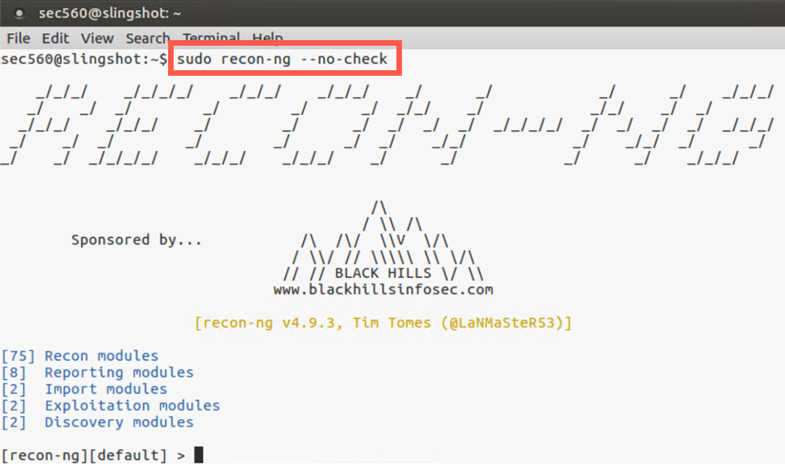

Lab 1.4: Recon-ng for DNS Analysis
Objectives
- To use the Recon-ng tool to retrieve and analyze DNS records
- To iterate through an IP address block, sending DNS Reverse Record (PTR) lookups for each address to find potential target machines
- To query for a series of domain names associated with antivirus update servers so that the penetration tester can determine which antivirus tools are likely in use by a target organization for more focus on AV evasion tactics
Table of Contents
Lab Setup
In this lab, you’ll gain familiarity with the user interface of Recon-ng and use it to gather useful information from the target organization’s DNS infrastructure.
In particular, you’ll run a Recon-ng module called "reverse-resolve", which takes a netblock of IP addresses and sends PTR (reverse record) lookups to a DNS server to determine which of those IP addresses resolve into names. That’s a useful feature for a penetration tester because it can help you identify hosts that could be included in your scope, provided that these hosts have PTR records in their DNS. Many organizations provide PTR records for important hosts on the internet, so this technique can be helpful during the reconnaissance phase.
Next, you’ll use a Recon-ng module called "cache-snoop" that performs DNS cache snooping against a target DNS server. This module looks for cached DNS records that are associated with DNS records from signature update sites of a couple dozen antivirus firms. If the target organization relies on any of those AV products, it likely will perform regular updates of its AV signatures, which will leave residual records associated with the AV company cached in the organization’s DNS servers. By identifying those cached entries, a penetration tester can determine which AV products the target organization is using, a helpful piece of information useful in evading the organization’s AV product.
For this lab, you need to be connected to the 560 target network environment. Make sure you can ping 10.10.10.60 (where there is a DNS server) before you begin the lab:
$ ping 10.10.10.60
If your ping doesn’t work, that means your Linux guest machine isn’t properly connected to the 560 target network. Consult the network configuration section earlier in this book or reach out to an instructor or TA for assistance.
Step-by-Step Instructions
1. Launch Recon-ng
Start the lab by running recon-ng root privileges using sudo:
$ sudo recon-ng --no-check
On the screen, you should see ASCII art announcing RECON-NG. You’ll also see an inventory of the types of modules, including Recon, Reporting, Import, Exploitation, and Discovery.
Note: You may see error messages mentioning
key not set. You can safely ignore those messages.

2. Explore the Interface
To become familiar with Recon-ng’s user interface, let’s explore its help feature. Below you can see all the commands supported by Recon-ng.
[recon-ng][default] > help Commands (type [help|?] <topic>): --------------------------------- add Adds records to the database back Exits the current context delete Deletes records from the database exit Exits the framework help Displays this menu keys Manages framework API keys load Loads specified module pdb Starts a Python Debugger session query Queries the database record Records commands to a resource file reload Reloads all modules resource Executes commands from a resource file search Searches available modules set Sets module options shell Executes shell commands show Shows various framework items snapshots Manages workspace snapshots spool Spools output to a file unset Unsets module options use Loads specified module workspaces Manages workspaces
3. The Show Command
One of the most important commands is the show command because it lets you look at Recon-ng’s options, configuration, and variable settings. Let’s run show by itself to see the various items we can explore using show:
[recon-ng][default] > show Shows various framework items Usage: show [banner|companies|contacts|credentials|dashboard|domains| hosts|keys|leaks|locations|modules|netblocks|options|ports|profiles| pushpins|repositories|schema|vulnerabilities|workspaces]
Here we can see that we can show banner to get version information. We can likewise run show followed by an item type in Recon-ng’s database, such as show hosts or show domains. We’ll do that later in the lab.
4. Show Options
To see the variables set in Recon-ng, run show options:
[recon-ng][default] > show options Name Current Value Required Description `---------- ------------- -------- -----------` NAMESERVER 8.8.8.8 yes nameserver for DNS interrogation PROXY no proxy server (address:port) THREADS 10 yes number of threads (where applicable) TIMEOUT 10 yes socket timeout (seconds) USER-AGENT Recon-ng/v4 yes user-agent string VERBOSITY 1 yes verbosity level (0 = minimal, 1 = verbose, 2 = debug)
Here you can see that by default, Recon-ng resolves information using the 8.8.8.8 name server provided by Google. We’ll change that shortly to our target organization’s DNS server.
Before we do that, though, let’s take a quick look at Recon-ng’s database structure so you can see the tables and their columns where Recon-ng will store data. Type the command below:
[recon-ng][default] > show schema
Your output will look similar to this:
[recon-ng][default] > show schema +---------------+ | domains | +---------------+ | domain | TEXT | | module | TEXT | +---------------+ +--------------------+ | companies | +--------------------+ | company | TEXT | | description | TEXT | | module | TEXT | +--------------------+ ... truncated for brevity ...
Note that there is a domains table, a hosts table, and several other tables that are automatically populated as we run various Recon-ng modules.
5. External Commands
The Recon-ng prompt handles a variety of Recon-ng commands. But when it receives a command it doesn’t recognize, Recon-ng passes that command to the underlying operating system shell for execution. This is handy because it means we can run general-purpose commands at the Recon-ng prompt. Let’s try it by running a ping command to ping 10.10.10.60 four times (-c 4 for a count of four):
[recon-ng][default] > ping -c 4 10.10.10.60 [*] Command: ping -c 4 10.10.10.60 PING 10.10.10.60 (10.10.10.60) 56(84) bytes of data. 64 bytes from 10.10.10.60: icmp_seq=1 ttl=64 time=0.705 ms 64 bytes from 10.10.10.60: icmp_seq=2 ttl=64 time=0.341 ms 64 bytes from 10.10.10.60: icmp_seq=3 ttl=64 time=0.344 ms 64 bytes from 10.10.10.60: icmp_seq=4 ttl=64 time=0.475 ms --- 10.10.10.60 ping statistics --- 4 packets transmitted, 4 received, 0% packet loss, time 2999ms rtt min/avg/max/mdev = 0.341/0.466/0.705/0.148 ms
Your ping should work, and you should see its output. It’s important to note that Recon-ng does NOT have a ping command. Instead, Recon-ng is simply taking our ping command and handing it to the underlying shell for execution.
To start performing recon against the target organization’s DNS server, let’s configure Recon-ng to use that nameserver, as follows:
[recon-ng][default] > set NAMESERVER 10.10.10.60 NAMESERVER => 10.10.10.60
Now when we run show options, we can see that the original 8.8.8.8 nameserver has been altered to 10.10.10.60.
[recon-ng][default] > show options Name Current Value Required Description `---------- ------------- -------- -----------` NAMESERVER 10.10.10.60 yes nameserver for DNS interrogation PROXY no proxy server (address:port) THREADS 10 yes number of threads (where applicable) TIMEOUT 10 yes socket timeout (seconds) USER-AGENT Recon-ng/v4 yes user-agent string VERBOSITY 1 yes verbosity level (0 = minimal, 1 = verbose, 2 = debug)
6. Modules
Let’s now explore the various modules Recon-ng has:
[recon-ng][default] > show modules
Discovery
---------
discovery/info_disclosure/cache_snoop
discovery/info_disclosure/interesting_files
Exploitation
------------
exploitation/injection/command_injector
exploitation/injection/xpath_bruter
Import
------
import/csv_file
import/list
Recon
-----
recon/companies-contacts/bing_linkedin_cache
recon/companies-contacts/jigsaw/point_usage
recon/companies-contacts/jigsaw/purchase_contact
recon/companies-contacts/jigsaw/search_contacts
recon/companies-multi/github_miner
recon/companies-multi/whois_miner
recon/contacts-contacts/mailtester
... truncated for brevity ...
Here you’ll see different groups of modules, including Discovery, Exploitation, Import, Recon, and more. Under each module group, you can see the individual modules, totaling several dozen.
7. Search
Often, a penetration tester has a sense of the type of module he would like to use but doesn’t know the full module name or its path to access it in Recon-ng. If that’s the case, we can use the search command to find specific modules based on strings in the module’s name or path.
Suppose, for example, we wanted to find modules that would resolve names (via either a forward or a reverse DNS lookup). We could simply run search resolve. Do that now:
[recon-ng][default] > search resolve
Here we can see several modules associated with resolving names. Notice that their paths all start with recon, as they are in the recon module group.
[recon-ng][default] > search resolve
[*] Searching for 'resolve'...
Recon
-----
recon/hosts-hosts/resolve
recon/hosts-hosts/reverse_resolve
recon/netblocks-hosts/reverse_resolve
8. The reverse_resolve Module
For this lab, we would like to iterate through a given target netblock (10.10.10.0/24) to see which host IP addresses have an associated PTR record. This is a useful way to find hosts and explore our scope in a penetration test. Of course, not every host on the internet has a PTR record, but many DMZ systems do, and we can use this module to help identify them.
To achieve this, we’ll use the recon/netblocks-hosts/reverse_resolve module. There is also a recon/hosts-hosts/reverse_resolve module, which takes as its input individual IP addresses. We’ll use the netblocks module, though, as we’ve been given the full 10.10.10 network as our target scope.
Let’s select that recon/netblocks-hosts/reverse_resolve module with the use command, followed by the full path to the module:
[recon-ng][default] > use recon/netblocks-hosts/reverse_resolve
Now, to get the details of that module, we can run show info:
[recon-ng][default] > use recon/netblocks-hosts/reverse_resolve
[recon-ng][default][reverse_resolve] > show info
Name: Reverse Resolver
Path: modules/recon/netblocks-hosts/reverse_resolve.py
Author: John Babio (@3vi1john)
Description:
Conducts a reverse lookup for each of a netblock's IP addresses to
resolve the hostname. Updates the 'hosts' table with the results.
Options:
Name Current Value Required Description
------ ------------- -------- -----------
SOURCE default yes source of input (see 'show info' for details)
Source Options:
default SELECT DISTINCT netblock FROM netblocks WHERE netblock IS NOT NULL
<string> string representing a single input
<path> path to a file containing a list of inputs
query <sql> database query returning one column of inputs
Here we see a brief description of the module, plus the different variables it supports. For this module, the SOURCE variable specifies where the information about our target netblock comes from. By default, Recon-ng simply looks in the netblocks table. We can specify other places, including a string that contains a single netblock or a path to a file that contains a list of netblocks, one per line.
For this lab, we’ll leave it as its default and place a netblock in the netblocks table next.
9. Add a Netblock
Let’s add a netblock to the netblocks table using the add command:
[recon-ng][default][reverse_resolve] > add netblocks 10.10.10.0/24
We can now look at the netblocks table to see our information there:
[recon-ng][default][reverse_resolve] > show netblocks +--------------------------------------+ | rowid | netblock | module | +--------------------------------------+ | 1 | 10.10.10.0/24 | user_defined | +--------------------------------------+ [*] 1 rows returned
Because we left the SOURCE for the reverse_resolve module as the default, Recon-ng will pull this information from the database to do the PTR lookups.
10. Running the Module
With our module configured, we can now run it as follows:
[recon-ng][default][reverse_resolve] > run ------------- 10.10.10.0/24 ------------- [*] 10.10.10.0 => No record found. [*] 10.10.10.1 => No record found. [*] 10.10.10.2 => No record found. [*] 10.10.10.3 => No record found. [*] 10.10.10.4 => No record found. [*] 10.10.10.5 => No record found. [*] 10.10.10.6 => No record found. [*] 10.10.10.7 => No record found. [*] 10.10.10.8 => No record found. [*] 10.10.10.9 => No record found. [*] [host] trinity.target.tgt (10.10.10.10) [*] 10.10.10.11 => No record found. [*] 10.10.10.12 => No record found. ... snipped for brevity ... [*] 10.10.10.18 => No record found. [*] 10.10.10.19 => No record found. [*] [host] morpheus.target.tgt (10.10.10.20) [*] 10.10.10.21 => No record found. ... snipped for brevity ... [*] 10.10.10.49 => No record found. [*] [host] neo.target.tgt (10.10.10.50) [*] 10.10.10.51 => No record found. [*] 10.10.10.52 => No record found. ... snipped for brevity ... [*] 10.10.10.59 => No record found. [*] [host] smith.target.tgt (10.10.10.60) [*] 10.10.10.61 => No record found. ... snipped for brevity ... [*] 10.10.10.254 => No record found. [*] 10.10.10.255 => No record found. ------- SUMMARY ------- [*] 4 total (4 new) hosts found.
In the output, we can see it sending a PTR query for each IP address in 10.10.10.0/24, looking for a response. For most of the IP addresses, no record will be found. But for 10.10.10.10, 10.10.10.20, 10.10.10.50, and 10.10.10.60, it should get a PTR record response, displaying that information on the screen.
When the module is finished running, it will show us how many hosts it found. It should find four.
11. Examining the Results
In addition to scrolling back on the screen to see what Recon-ng found, we can also look at the hosts table because the reverse_resolve module automatically populates it. Let’s look at our newly discovered hosts:
[recon-ng][default][reverse_resolve] > show hosts +-------------------------------------------------------------------------------------------------------+ | rowid | host | ip_address | region | country | latitude | longitude | module | +-------------------------------------------------------------------------------------------------------+ | 1 | trinity.target.tgt | 10.10.10.10 | | | | | reverse_resolve | | 2 | morpheus.target.tgt | 10.10.10.20 | | | | | reverse_resolve | | 3 | neo.target.tgt | 10.10.10.50 | | | | | reverse_resolve | | 4 | smith.target.tgt | 10.10.10.60 | | | | | reverse_resolve | +-------------------------------------------------------------------------------------------------------+ [*] 4 rows returned
Note that we have a domain name and IP address for each of the hosts based on the returned PTR record. The hostnames are all associated with the target.tgt domain (which we can check against our target scope) and include names such as trinity, morpheus, neo, and smith, a naming scheme based on a movie.
12. The cache_snoop Module
Now that we’ve gathered some hosts associated with the target environment, let’s use another Recon-ng module to determine the most likely antivirus tool or tools the target organization is using. We can do that with the cache_snoop module in Recon-ng’s discovery group.
We can back out of our current module to the general Recon-ng prompt using the back command:
[recon-ng][default][reverse_resolve] > back [recon-ng][default] >
We’ll now use the discovery/info_disclosure/cache_snoop module:
[recon-ng][default] > use discovery/info_disclosure/cache_snoop [recon-ng][default][cache_snoop] >
Let’s look at the options for this module:
[recon-ng][default][cache_snoop] > show options Name Current Value Required Description ---------- ------------- -------- ----------- DOMAINS /opt/recon-ng-v4.9.3/data/av_domains.lst yes file containing the list of domains to snoop for NAMESERVER yes IP address of authoritative nameserver
Here we see that this module needs a NAMESERVER. (Unfortunately, the module doesn’t automatically populate the NAMESERVER value with the one configured overall for Recon-ng.) This module also needs a list of names that it should look for in the target DNS server’s cache. By default, it searches for names stored in the av_domains.lst file that comes with Recon-ng. Let’s look at the contents of that file:
[recon-ng][default][cache_snoop] > cat /opt/recon-ng-v4.9.3/data/av_domains.lst [*] Command: cat /opt/recon-ng-v4.9.3/data/av_domains.lst www.es-latest-3.sophos.com/update www.es-web.sophos.com www.es-web.sophos.com.edgesuite.net www.es-web-2.sophos.com www.es-web-2.sophos.com.edgesuite.net www.dnl-01.geo.kaspersky.com www.downloads2.kaspersky-labs.com www.liveupdate.symantecliveupdate.com www.liveupdate.symantec.com www.update.symantec.com ... truncated for brevity ...
Here we can see the names of update servers for numerous different AV product firms. You could expand this list or even create your own in future penetration tests, based on different items you’d like to snoop for in a target organization’s DNS cache. For this lab, we’ll keep this default list, which is quite good.
13. Running cache_snoop
We now set NAMESERVER. (Remember that this module does NOT use the name server configured overall for Recon-ng, so we must set it now in the context of the cache_snoop module.)
[recon-ng][default][cache_snoop] > set NAMESERVER 10.10.10.60 NAMESERVER => 10.10.10.60
With all our settings now in place, we can run the module:
[recon-ng][default][cache_snoop] > run [*] www.es-latest-3.sophos.com/update => Not Found. [*] www.es-web.sophos.com => Not Found. [*] www.es-web.sophos.com.edgesuite.net => Not Found. [*] www.es-web-2.sophos.com => Not Found. [*] www.es-web-2.sophos.com.edgesuite.net => Not Found. [*] www.dnl-01.geo.kaspersky.com => Not Found. [*] www.downloads2.kaspersky-labs.com => Not Found. [*] www.liveupdate.symantecliveupdate.com => Not Found. [*] www.liveupdate.symantec.com => Not Found. [*] www.update.symantec.com => Not Found. [*] www.update.nai.com => Not Found. [*] www.download797.avast.com => Not Found. [*] www.guru.avg.com => Not Found. [*] www.osce8-p.activeupdate.trendmicro.com => Not Found. [*] www.forefrontdl.microsoft.com => Not Found. [*] es-latest-3.sophos.com/update => Not Found. [*] es-web.sophos.com => Not Found. [*] es-web.sophos.com.edgesuite.net => Not Found. [*] es-web-2.sophos.com => Not Found. [*] es-web-2.sophos.com.edgesuite.net => Not Found. [*] dnl-01.geo.kaspersky.com => Not Found. [*] downloads2.kaspersky-labs.com => Not Found. [*] liveupdate.symantecliveupdate.com => Not Found. [*] liveupdate.symantec.com => Not Found. [*] update.symantec.com => Snooped! [*] update.nai.com => Not Found. [*] download797.avast.com => Not Found. [*] guru.avg.com => Snooped! [*] osce8-p.activeupdate.trendmicro.com => Not Found. [*] forefrontdl.microsoft.com => Not Found.
As the module runs, look carefully at its output. You’ll note that it says "Not Found" for the majority of the domain names. But for two of them (update.symantec.com and guru.avg.com), it does show that it "Snooped!" a name (that is, it found the name in the target DNS server cache). Look specifically at the lines below.
[*] update.symantec.com => Snooped! [*] guru.avg.com => Snooped!
Thus, it is likely that the target organization is utilizing Symantec and/or AVG as its antivirus product, given that the target’s DNS server was used to resolve those names recently (and the DNS Time to Live for those records has not expired, so it remains in the cache). Of course, once that TTL expires, the cached entries will be dropped.
This information about the target’s AV vendor is tremendously useful in our penetration test, especially if we are going to create any malware for the target organization to send via spear phishing or other means.
14. Wrapping Up
To finish the lab, we can exit the Recon-ng tool:
[recon-ng][default][cache_snoop] > exit sec560@slingshot:~$
We should also clean up the Recon-ng configuration file and database, which are automatically created in our home directory (~):
sec560@slingshot:~$ sudo rm -rf .recon-ng/
This will remove all the information in the database, as well as the custom name server configuration we set for Recon-ng.
Conclusion
In this lab, we have used Recon-ng to get familiar with its user interface and look at its database. More importantly, though, we ran Recon-ng to pull some highly useful information about the target organization.
Particularly, we iterated through a target netblock given to us in our scope to identify individual target host IP addresses. This information will be useful as we move into the Scanning phase of our penetration test to be covered later in this course. And, perhaps even more important, we determined the likely antivirus products in use by the target organization. That information will be extremely useful as we move into the Exploitation phase of the penetration test.